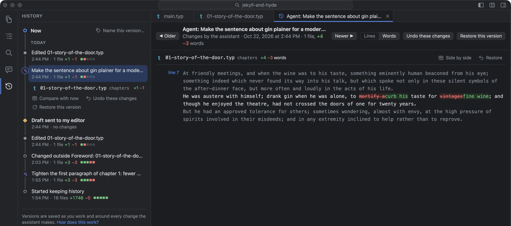
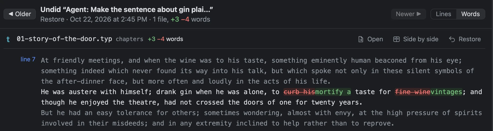
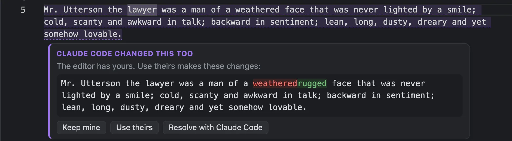

When versions are kept
- When you open the book. If it changed while Foreword was closed, that version says so: “Changed outside Foreword: ch3.typ”.
- Ten seconds after you save, whether that’s ⌘S, auto save, or another program changing the file.
- Just before the assistant starts on a request, so your own edits are a version of their own, and just after, if it changed anything.
- When you name one (“Draft sent to my editor”), and when you mark an assistant’s task done (“Task done: …”).
- Before and after you go back to an earlier version, so going back can itself be undone.
Typing you haven’t saved isn’t in History yet. But Foreword saves your open files before every message to the assistant, and auto saves every five minutes.
The timeline
History is a view down the side of the window: a line of versions from Now back to the day it started. Each version is a dot, coloured by who made it: grey for you, a violet ✦ for the assistant (labelled with what you asked for), an amber diamond for a version you named, a blue ↺ for going back. Each one shows how much it changed.
Click a version and its files fold out beneath it, with Compare with now, Restore this version, and, for the assistant’s, Undo these changes. A What changed tab opens beside it, with ◀ Older and Newer ▶ (⌥← ⌥→) to step from version to version. History of This File, on a file’s right-click menu, shows only the versions that changed that file.
What changed, in words
In prose, one changed line can be a comma or a whole rewritten paragraph. So What changed shows words: the ones that went struck through, the ones that came in highlighted, with a line of the text around each passage so you can see where it is. Changed equations are drawn, old and new. If you’d rather see whole lines side by side, there’s Lines.
Click a passage, or move through them with the arrow keys, and the preview scrolls to that place in the typeset pages.
Undo just the assistant’s change
Say the assistant rewrote three sentences of chapter 1, and since then you’ve fixed a typo in one of them and written a new paragraph. Undo these changes on its version takes out what it did and keeps what you’ve done since. If you changed the very same words it changed, Foreword doesn’t guess: it leaves that file alone and tells you. Files the assistant created are left in place, and listed too.
Restore this version puts the whole book back as it was then. Files added since are left alone (Foreword never deletes them), open files with unsaved changes are skipped and listed, and the book as it was a moment ago is kept first, so you can go forward again.

Where it’s kept
History is kept in Foreword’s own folder on your Mac, not in your book’s folder, so the book stays just as you’d send it. It includes every file in the book, pictures too. A version keeps only what changed, so even a long book’s History takes little room.
It asks nothing of you: no saving copies as chapter-3-final-v2-REAL.docx, no commits, no messages. If you do keep your book in Git, History never reads or writes it, and your Git log stays yours. Source Control appears as a view of its own, with commit, push and pull, and nothing in it can throw work away.
Your typing and the assistant’s, at once
You can keep writing while the assistant works, in the same chapter. When a file you have open changes underneath you (the assistant, Git, another program), Foreword folds the change into what you’re typing instead of making you choose between them. Your unsaved typing stays, their change goes in around it, and ⌘Z takes their change out in one step.
Because the assistant writes one sentence per line, you fixing one sentence while it fixes the next isn’t a clash at all. Only where you both changed the same words does it ask, with a card under the passage: Claude Code changed this too, its version word by word, and Keep mine, Use theirs, or Resolve with Claude Code, which asks the assistant to combine the two.

A save you make while the assistant works is never lost, even if the assistant then writes over the file from the copy it read earlier. Foreword puts your change back straight away.
- Open History
- The clock down the left of the window, or View ▸ History
- Name a version
- Name this version… at the top of the timeline, or Book ▸ Name This Version…
- Auto save
- Settings ▸ Editor ▸ Auto save, every 5 minutes to start with (1 to 120)
What it doesn’t do
- Nothing is thinned out yet: History grows with the book.
- Moving or renaming the book’s folder starts a new History. The old one is still kept, but the book doesn’t show it.
- You can compare a version with the one before it, or with now, but not any two versions with each other.
- Edits you save while the assistant is in the middle of a request are counted as part of the assistant’s version.
- Only files open in the editor are combined as you type. Source Control can’t merge when pulling; if your copy and the other one have both changed, pull with Git yourself.